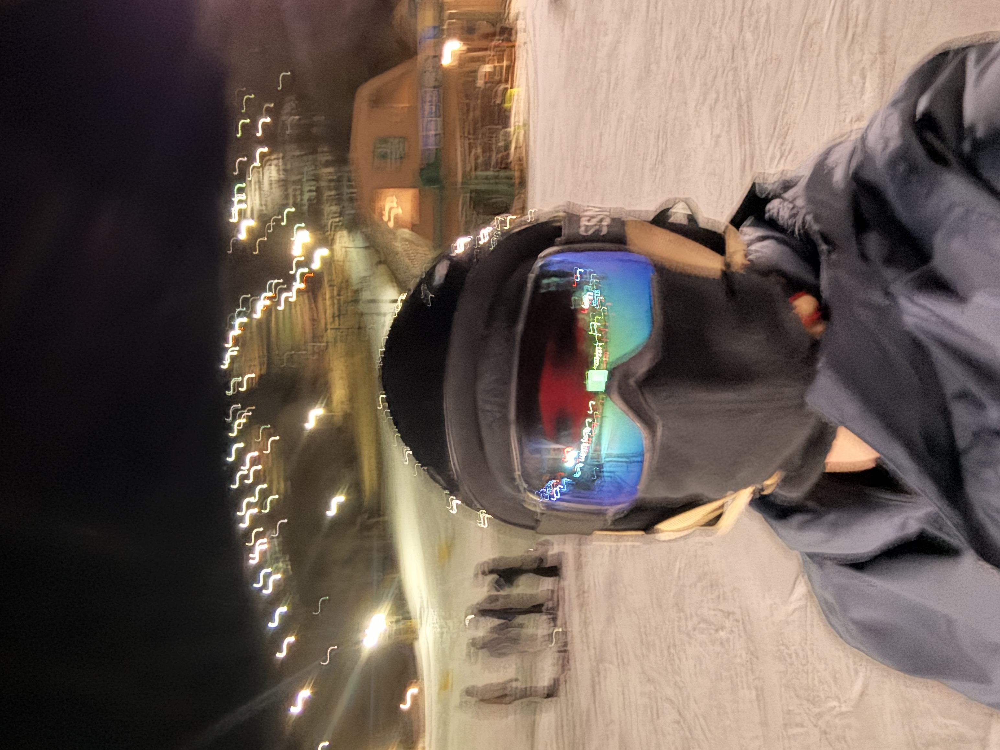
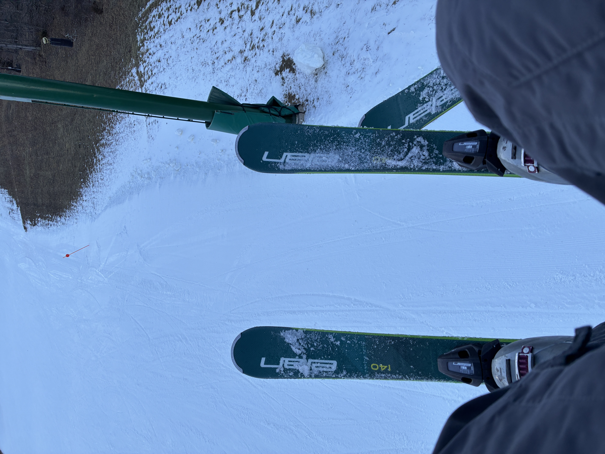
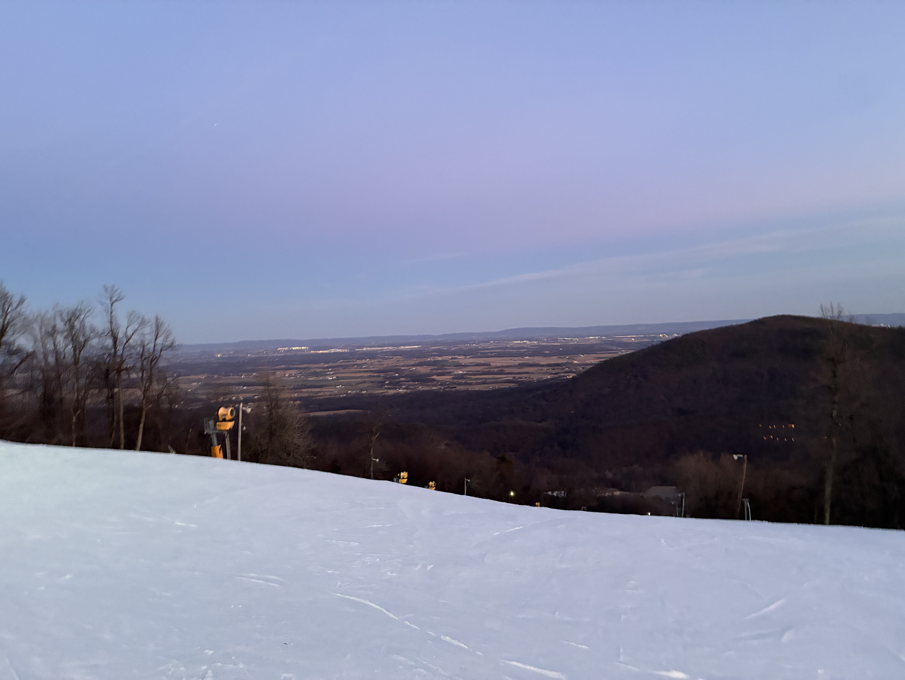

| Jack Mason About Research Blog National Parks |
|
January 25, 2026
This past Thursday (1/22) I had the amazing opportunity to go skiing with some of my friends from school. Now I’m no pro or anything, but I would say I’m a pretty decent skier, especially for the amount of time I do it. I skied probably once or twice a year for most years from middle to highschool, but since starting college, I really haven’t gotten the chance to. Luckily enough this streak was broken as me, tej, eric, and their friend headed up to whitetail. After just a couple runs of sidewinder, I felt like I was back to the level I was the last time I skied. Then I went up to the main lift and exhausted all of the blues available. Despite some of the icy spots, it was a really nice temperature and generally a beautiful day to ski. Something funny that happened was when I was going down the slope and saw this jit with a gopro on his chest get absolutely blown up by a snowboarder. It was like only 80% his fault though because I could tell he was trying to stop but the ice didn’t let him, didn’t stop him from hitting that kid at like 40 miles an hour though. I stopped to help the kid but he was crying so much I was of no use. A few minutes later a huge crowd formed so I figured it would be ok to leave. When I got to the bottom of the mountain I waited a couple minutes and I swear I saw the same kid with his friends skiing down so maybe he tanked it. Anyways. Another cool thing that happened was that I met up with my friend jason from school and we went to the back of the mountain to do some black and… double black… diamonds. While I didn’t go down them super fast, I didn’t fall and it was super fun. Overall it was an amazing little trip and it was super cheap bc it was college night. Here are some pictures I took:   
|